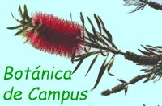
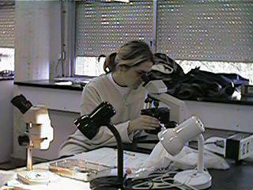
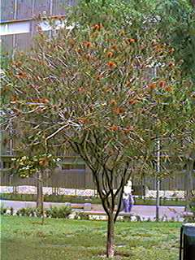
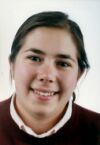
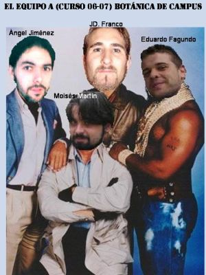

| Contenido de este documento: | |||||
| Introducción | Objetivos |
Material y Métodos |
Contenidos y programa |
Normas y horario |
Memoria |
| La Bibliografía está en
el fichero: Bibliojardin.hmt |
|||||
| Es una buena tradición en la enseñanza de la Botánica el dedicar la máxima atención posible a las prácticas. Sin embargo la amplitud del temario y las limitaciones materiales nos obligan a dedicar las 30 horas de prácticas disponibles del programa de la asignatura "Botánica" (1er. curso del plan 99) a lo que consideramos más esencial en la formación del biólogo: |  |
|
|
|
Además
de estas dos tareas, que se cumplen en clases
prácticas de laboratorio, se suelen reservar 6 horas
para realizar al menos dos excursiones al campo,
explicando sobre el terreno las características de
la vegetación mediterránea y las especies leñosas y
herbáceas más destacadas de nuestra flora.
Pero
hay muchos aspectos que no se pueden tratar en
profundidad y algunos que no se tratan en absoluto.
Uno de estos últimos es la Botánica ornamental.
En efecto, los alumnos de Biología (y la mayoría de
los licenciados) cruzan a diario el campus de Reina
Mercedes sin saber a la sombra de qué árboles
pasean. Las plantas del campus son unos
objetos verdes más o menos útiles o hermosos sobre
los que tienen escasa información.
|
 Callistemon speciosus (Myrtaceae)
|
Itinerario por la zona central del Campus (formato "pdf":
Itinerario por la Escuela de Informática:
Entrega de trabajos definitivos:
| Francisco José
López estudia 5º en 2003 |
Olga Ojeda dejó Biología |
Silvia Martín Técnico Superior en Gestión y Organización de Recursos Naturales y Paisajísticos |
Sara Martínez Castizo estudia 5º en 2003 |
Laura Massia Licenciada en 2006 Profesora de EEMM |
 |
||||
| Lorena Moya dejó Biología |
Rosa Mayán estudia 5º em 2003 |
Natalia Navarro estudia 5º en 2003 |
Francisco Pérez Montaño Licenciado en 2006 |
Conchy Sánchez P.A.S.; estudia 2º en 2003 |
| Nota: se agradecerá la
información para actualizar estos datos |
||||
|
|
| Que
confeccionaron
56 fichas |
|
Los principales temas de trabajo fueron:
| Curso 2004/05: María Rodríguez Morales
Matrícula de Honor |
|
Curso 2005/06 Juan Viruel Sánchez
Matrícula de Honor |
Actualmente investigador senior de Botánica en la Universidad de Zaragoza |
| Curso 2006/07
Juan de Dios Franco
Navarro, del Equipo A:
Matrícula de Honor
|
 Posteriormente pulularon por la Facu organizando follones culturales e intentando terminar la carrera y ganarse la vida como "biólogos de fortuna" |
Curso 2007/08 Cynthia Alías Villegas Matrícula de Honor Actualmente es Técnica Especialista de Apoyo a la Investigación en la Universidad Pablo de Olavide |